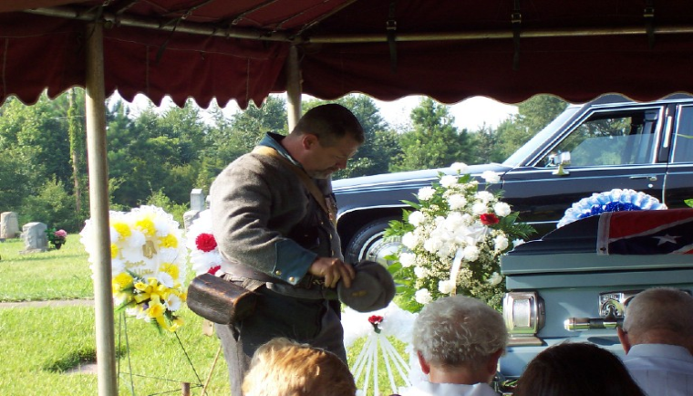

The Moses Wood Camp #125
boasts of a long list of SCV
members in good standing.They
are as follows:
David Bivens
William S. Blanton jr.
William Stephen Bratton
Larry Wayne Burgess
Patrick Keith Carroll
John Broadus Cook
James M. Cooper
James Marion Cooper
Jerry Alvin Cooper
Marshall D. Cooper
John Loyd Davis
Jordan Wade Dill
Jordan Lee Dill
Tommy H. Dooley
Phillip J. Ervin
Claude Randall Fowler
Dwayne R. Fowler
John Mac Gaffney
Marcus Leonard Gaffney III
Miles Gettys
Jeffrey M. Griffith
Douglas Lamar Guest
David Leroy Harrill
Michael Melvin Harrison
Joseph MacDowell Hartzog
Jack Dean Howe
James William Hughey
Samuel Todd Humphries
Mark Albert Hunsinger
Roy Jefferies jr
Ed Kirkley
Kevin J. Lancaster
Douglas G. Lee
Frank M. Lee
Robert Emmett Little
Glenn Edmond Martin
Lanny Mathis
William Lawrence Moore
Louis Michael Moss
Michael Nathaniel Moss
A list of our compatriots that have been laid to
rest.They may be gone but will never be forgotten.
Michael Allan Nicholson
Abner Waters
Paul Thomas White
Jerry Fowler
It is with great sorrow that we have to say goodbye to two of our camp
members.Compatriots Paul Thomas White and Michael Allan Nicholson. The two
have passed on to be with there confederate ancestors in heaven.These two fine
compatriots will forever be missed.May they rest in peace.
Below are some photos at the Paul White funeral.It was at his request that he
have a confederate style burial. Some of the members were honored to fulfill his
request.

Camp Moses Wood #125 Commander Jordan Dill respectively bows his head for a
prayer while standing at the head of the Confederate Flag draped coffin on Compatriot
Paul Thomas White.
Assistant camp chaplain and honor guard member,Compatriot Dexter Roberts leads the
attending family members and friends in a prayer.
Camp Commander Jordan Dill (L) and Lt. Commander Mark Sheppard (R),remove the
Confederate flag and are seen here carefully folding it.The flag was shortly thereafter
persented to the widow of Mr. Paul White. Mrs. white is pictured on the far left of the front
row.(purple dress,white collar)
The honor guard is seen here firing three volleys in honor of Paul T. White.Members of
the honor guard were (LtoR) Dexter Roberts,Marshall Cooper,Keith Carrol,Mark
Sheppard,and Jordan Dill.The first national was presented by Butch Wylie(not shown).
Loius M. Moss
Michael Nathaniel Moss
Dennis Ray Mullinax
Kenneth Patrick Neal
Paul Wesley Noe
Michael Dolan Owen jr
Billy Erskine Peeler
Boone Peeler
Dave McClain Peeler
J R Peeler Sr.
Michael B. Peeler
William Boyce Peeler
Brad Peterson
Clint Phillips
Olin Patrick Phillips
James Nathan Price
James Stephen Price
William Eugene Putnam
John Calvin Raines
Dexter A. Robert
Wade Alonzo Scruggs
Donald Mark Sheppard
James Alan Smith
Gary Lamar Snead
Scott Sparks
David Glen Stacy
Ray Kenfield Starnes
William Fulton Strain
Harold M. Terry
Bobby D. Waldrop
Phillip V. Waters
Billy Rodger Williams
Jamie Willis Jr.
Tommy Wolf
John W. Wyatt Jr.
Ralph Dewayne Wyatt
Garry Lloyd Wylie
NOTICE